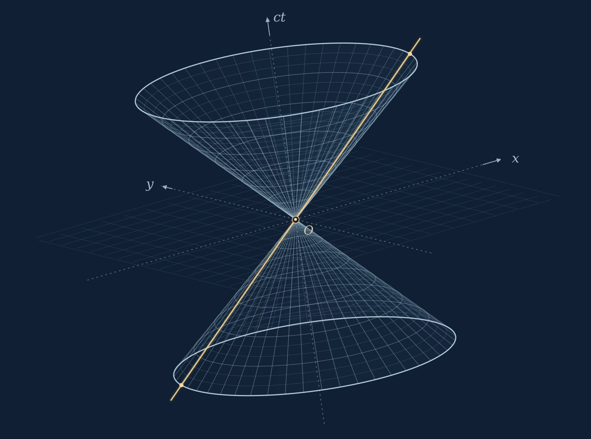

Featured preprint
Can light tell whether spacetime is complex?
Two geometries can share a light cone. Gauss-K examines what the paths of light reveal about a complex spacetime metric, and what they leave undetermined.

Research programme
Complex Relativity
Gauss-K studies spacetime geometry and gravitation in search of a deeper unity in the laws of nature. Complex Relativity is a proposed framework for relating complex spacetime to the light and matter we observe.
Blog
Research notebook
Short notes on causal geometry, readings in physics, and questions that remain open between papers.
Visit the blogWriting
The novels
Two connected stories about the people, machines, and unfinished questions behind scientific discovery.
Read the novels